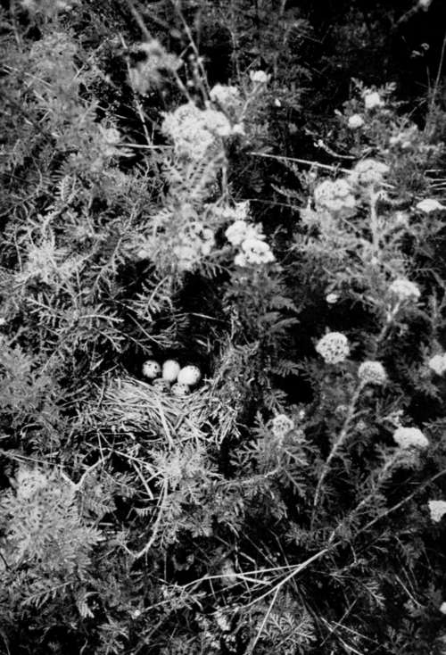

Collecting In The Dobrudscha. Part 10
Description
This section is from the book "Bird-Hunting Through Wild Europe", by R. B. Lodge. Also available from Amazon: Bird-Hunting Through Wild Europe.
Collecting In The Dobrudscha. Part 10
The next day we returned to Malcoci, and were not sorry to take it easy for a day or two after our exertions, visiting some of the colonies of Bee-eaters not very far from the village, for eggs and photographs.
There are many clefts or cracks in the soft, loamy soil, sometimes several yards in length and ten or twelve feet deep. In the sides of these nest numbers of Bee-eaters (Merops apiaster), Rollers (Co-racias garrula), Hoopoes (Upupa epops), and Tree Sparrows (Passer montanus), and an occasional Kestrel, or Little Owl; while if water is near, as is often the case, then Kingfishers also may be found using the burrows.
Just now there are numbers of Rose-coloured Pastors passing through this district, and I was able to obtain several with a walking-stick gun-some of the cocks in extremely fine plumage, with long, glossy crests, and bodies of a brilliant pink. When, as sometimes happens, thirty or forty of these beautiful birds settle in a small tree they look exactly like brilliant pink blossoms at a little distance. On my return journey through Budapest I heard that these birds were nesting in Hungary. They have the curious custom of not nesting regularly in any particular country, but sometimes in one district, where for years they are never seen, and sometimes elsewhere. They follow the locusts, on which they largely feed, and their movements depend upon the wandering flocks of those insects.
The Lesser Grey Shrike (Lanius minor) is exceedingly abundant in this upper steppe-like country ; in the lower parts you never see it. In the front of Rettig's house were three acacia-trees ; in two of these were nests of this Shrike, and there was another one at the back. The birds may be seen in every direction, sitting on the telegraph wires, as do the Bee-eaters and Rollers, and on the small oak-trees and acacias. We found numbers of their nests ; they are generally at a height of at least fifteen or twenty feet. The outside of these nests is made of twigs of a whitish colour, exactly like the nests of the Woodchat Shrike in Spain, and there is almost always some of the strongly-smelling aromatic vermouth worked into the nest. This plant grows abundantly, and covers the ground like a weed wherever it is left uncultivated. Five clutches were common, and we found several of six and seven.
On the ground among the vermouth we found several nests of Emberiza hortulana, the Ortolan Bunting, and no doubt the Calandra Lark also nested there. We saw many of these large larks, but did not happen to find a nest.
On the 21st of May we took two eggs of the Great Bustard (Otis tarda) ; and on the same day a young Golden Oriole in greenish-yellow plumage was shot. I took it for a female, but on dissection it proved to be a male ; it must therefore have been a bird of the previous year. I should have expected this bird to have acquired its full adult plumage sooner.
Nest Of Ortolan Bunting (Emberiza Hortulana)
On the 22nd of May a male Barred Warbler (Sylvia nisoria) was brought in by a boy. It was barred like a little Sparrow-hawk. A few days later, I see, on reference to my note-book, that we took a clutch of seven Bee-eaters' eggs, and also seven Hoopoes. Of Rollers the largest clutch was four.
On the 30th of May Rettig shot a Pygmy Cormorant, alias Schtinker. At the report a Purple Heron and a Marsh Harrier both got up. From the Harrier's manner of rising I suspected a nest, and on going to the spot found one containing four nearly fresh eggs. On the same day I shot a Savi's Warbler (Locustella luscinioides) with the walking-stick at very close quarters. Three of us -Rettig, a fisherman, and myself-were peering into the recesses of a floating reed-island while the bird was reeling away within two yards of our noses, and we couldn't see it. At last I caught a glimpse and fired ; but though we all saw it fall it was not to be found, nor could we discover a nest, though in all probability there was one quite close to us. I also shot four Great Reed Warblers (Acrocephalus turdoides), but only succeeded in finding one. This bird is very dead-reed-like in colour everywhere; the only bright part about it is the palate, which is brilliant orange.
Two clutches of Black Terns' eggs were also taken, one clutch containing a pale-blue egg. I have seen similar eggs in the nests of Common Tern, but I have never seen such a variation among all the hundreds of Black Terns' eggs I have met with in different countries. We shot a pair of Gadnall for the pot. These ducks are most excellent eating. We had been having short commons lately, and one reason for our coming out was to shoot something to eat. I hadn't tasted meat for days. Rettig told me that he was sometimes driven to eat Cuckoos and Hoopoes, which are considered here good food. I also knocked over a White-eyed Pochard and a Mallard, but the former was only winged, and dived and was no more seen. I ought to have fired again when it first fell, for unless they are killed outright they nearly always escape by diving.
When we had come to our last cartridge, loaded with special big shot for Eagles or Swans, a pair of Red-crested Pochards (Fuligula rufina) were approached, but though the large shot tore up the water all round them they both flew up untouched.
One reason, as I have said, for our day's outing was to shoot for the pot ; the other reason was that this day was a special saints' day in this village, and all Tulcea would drive over, and the village would be en fete. Last year sixty people called to see Rettig's collection of birds, and entertaining them hospitably cost him two sheep, and wine in proportion. This sort of thing does not suit him nor me ; so we fled into the Balta, while his wife went off to the town to see some friends, leaving the house shut up and empty. When we returned after sunset we saw the last of the carriages and wagons starting back and congratulated ourselves on our escape.
Continue to:
- prev: Collecting In The Dobrudscha. Part 9
- Table of Contents
- next: Collecting In The Dobrudscha. Part 11